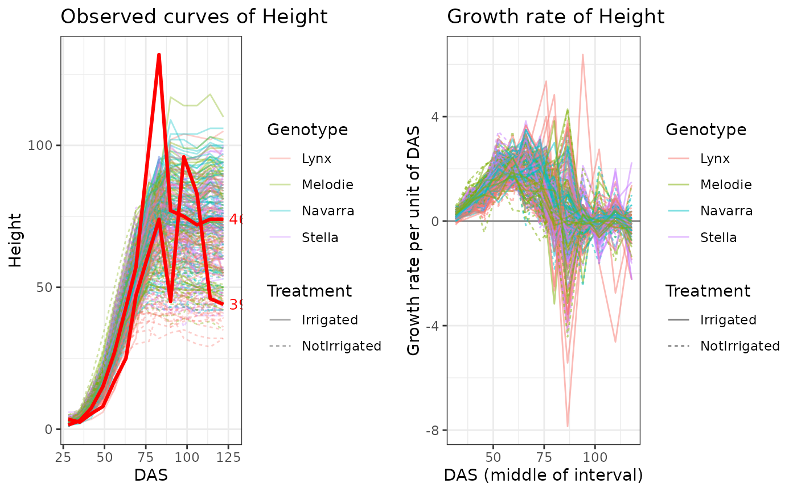

A Shiny app to step through the individuals of a data set and see the observed curve of each, with
the other individuals in the background, filters by covariates, colour and line type by
covariates, and the growth rate between successive observations (output="html"); or two
ggplot2 graphs of all the individuals, of the curves and of their growth rates, with the curves
of the largest increase and decrease between successive observations in red (output="jpeg").
Usage
viewcurves(
data,
x,
y,
id = NULL,
covariates = NULL,
colour = NULL,
linetype = NULL,
output = c("html", "jpeg"),
outliers = 1,
file = NULL
)Arguments
- data
A data frame.
- x
Character string. The column of the times (the x axis).
- y
Character string. The column of the response (the y axis).
- id
Character vector or NULL. The columns that together identify an individual; NULL (default) for a single curve of all observations.
- covariates
Character vector or NULL. Columns for the filters and the colour and line type of the curves.
- colour, linetype
Character string or NULL. The covariate that sets the colour or the line type; NULL (default) for none when the app starts (both can be changed in the app), and for the first two covariates with
output="jpeg".- output
Character string. "html" (default) for the Shiny app; "jpeg" for the two graphs of all the individuals.
- outliers
Non-negative integer. With
output="jpeg", the number of individuals drawn in red for each direction, the largest increase and the largest decrease between successive observations, so up to twice as many individuals in all; 0 for none. Default 1. The same argument ofplot.gcTMBcounts the observations with the largest absolute residuals.- file
Character string or NULL. With
output="jpeg", the JPEG file to write the two graphs to (12 by 5 inches at 150 dpi); NULL (default) draws them.
Value
With output="html", a shiny.appobj. With output="jpeg", invisibly, a
list of the two ggplot graphs, curves and rate, and outliers, a data frame
of the individuals drawn in red: id, direction ("increase" or "decrease"),
rate (the growth rate) and from and to (the interval of x).
Details
The individuals are the combinations of the id columns, e.g. id=c("Plot", "Plant")
for plants numbered within plots, and are labelled by their values joined by ":". Without
id, all observations are one curve. The rows are sorted by x within each individual,
and rows with a missing x or y are left out.
Each covariate gets a filter: a choice of one value for a character, factor or logical covariate,
or a numeric one with at most 12 distinct values, and a range for the other numeric covariates.
The filters select observations, and the previous and next buttons (or the left and right arrow
keys) step through the individuals with observations left. The covariates can also set the colour
of the curves (a continuous scale for numeric covariates with more than 12 values) or their line
type (covariates with at most 6 values). The covariates of the selected individual, from its first
observation, are shown below the title of the graph. With "Same axes for all individuals" (on by
default), both graphs keep their axes as the individuals change: the graph of the curves the range
of x and y of all observations, and the graph of the growth rate the range of the
growth rates of all individuals. Moving the mouse over a graph shows the observation nearest to it:
its individual, x and y (the selected individual first, then the others shown), or on
the graph of the growth rate the interval and the rate.
The growth rate is the difference of y between successive observations divided by the
difference of x, drawn at the middle of each interval; observations at the same x give no
rate.
The app needs the package shiny. It is returned as a shiny.appobj, which starts when it is
printed, e.g. by calling viewcurves() at the console, or with shiny::runApp().
With output="jpeg", the two graphs are drawn side by side, or written to the JPEG file
file. Without colour and linetype, the first two covariates set them: the one
with more distinct values the colour, the other the line type (if it has at most 6 values; the
first of them on a tie). A single covariate sets the colour. The outliers individuals
with the largest positive growth rate (the steepest increase between two successive observations)
and the outliers individuals with the most negative growth rate (the steepest decrease),
each individual counted at its own steepest interval, are drawn in red in the graph of the curves
and labelled at their last observation, the others fainter; they are reported by a message and
returned. A single wrong measurement shows up as an increase followed by a decrease, or the reverse.
Examples
if (interactive() && requireNamespace("shiny", quietly=TRUE)) {
viewcurves(FabaHeights26, x="DAS", y="Height", id="Plant_ID",
covariates=c("Genotype", "Treatment", "Soil"), colour="Genotype")
}
# the curves and growth rates of all plants, coloured by genotype, line type by treatment, with
# the plants of the steepest increase and decrease between two measurements in red
vc <- viewcurves(FabaHeights26, x="DAS", y="Height", id="Plant_ID",
covariates=c("Genotype", "Treatment"), output="jpeg")
#> Largest increase between successive observations: Plant_ID 39_4 (growth rate 6.38 from DAS 90 to 98)
#> Largest decrease between successive observations: Plant_ID 46_5 (growth rate -7.86 from DAS 83 to 90)

vc$outliers
#> id direction rate from to
#> 1 39_4 increase 6.375000 90 98
#> 2 46_5 decrease -7.857143 83 90